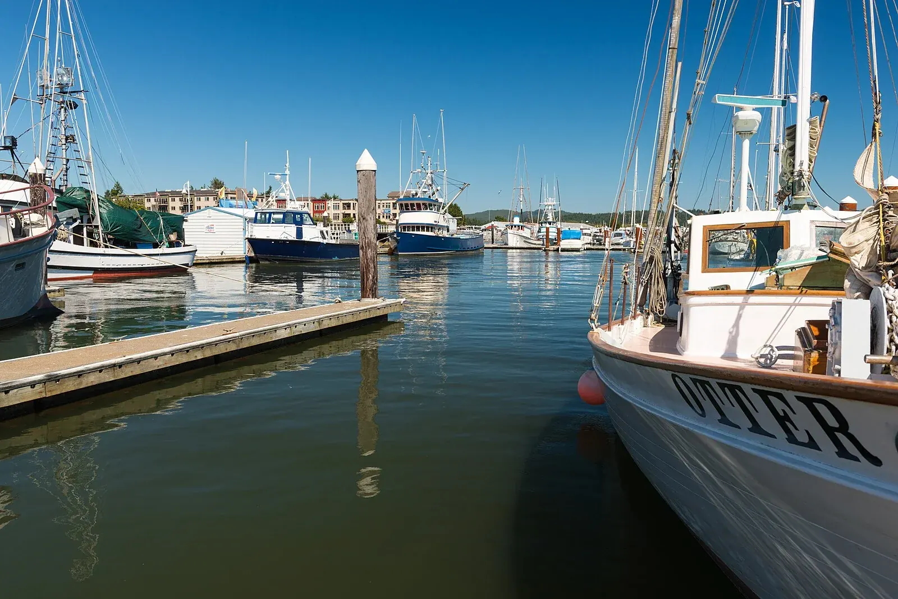
REAL PLACES · TRACEABLE SOURCES
Photo credits
When Oregon Dunes Guide names a real town, lake, campground, staging area, or riding zone, we aim to show that actual place. This page records where those photographs came from and how they may be reused.
The photographs below were cropped, resized, and converted to WebP for faster page loading. Creative Commons derivatives remain available under their original licenses. Official Recreation.gov gallery images are linked to their source campground pages.
{kind=link}
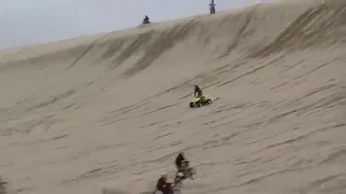
SOUTH JETTY
South Jetty OHV Staging
Steven Pavlov. Still image taken from the source video. Source · CC BY-SA 4.0
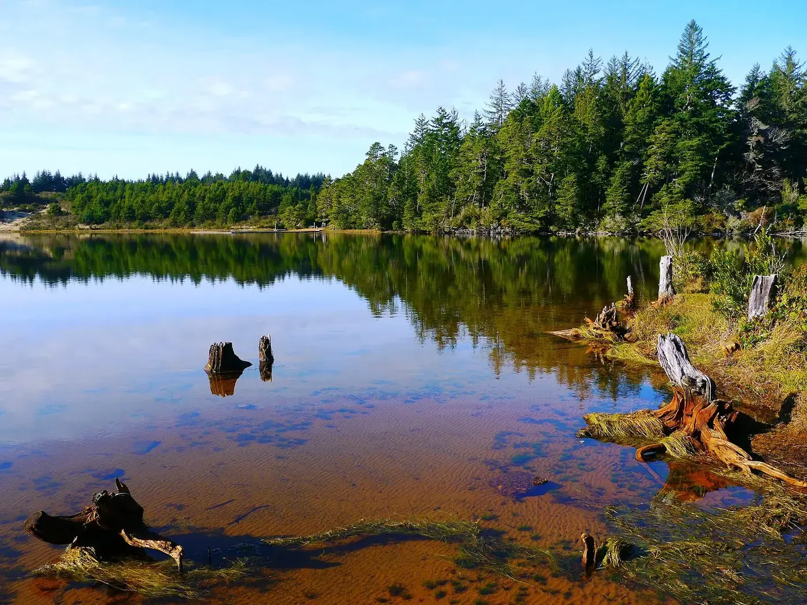
{kind=link}
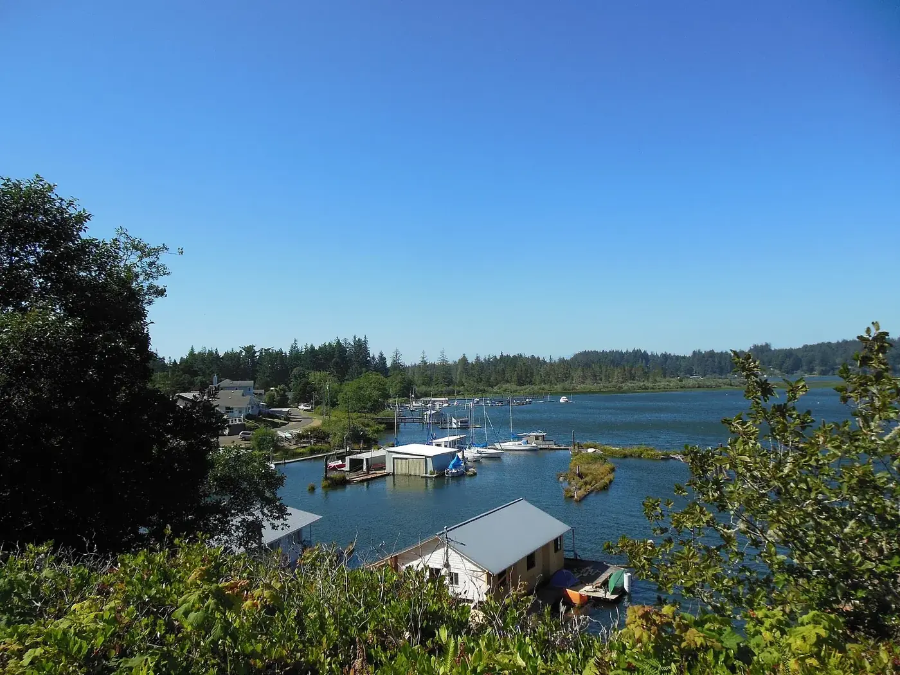
SILTCOOS
Siltcoos Lake
Jsayre64. Source · CC BY-SA 3.0
{kind=link}
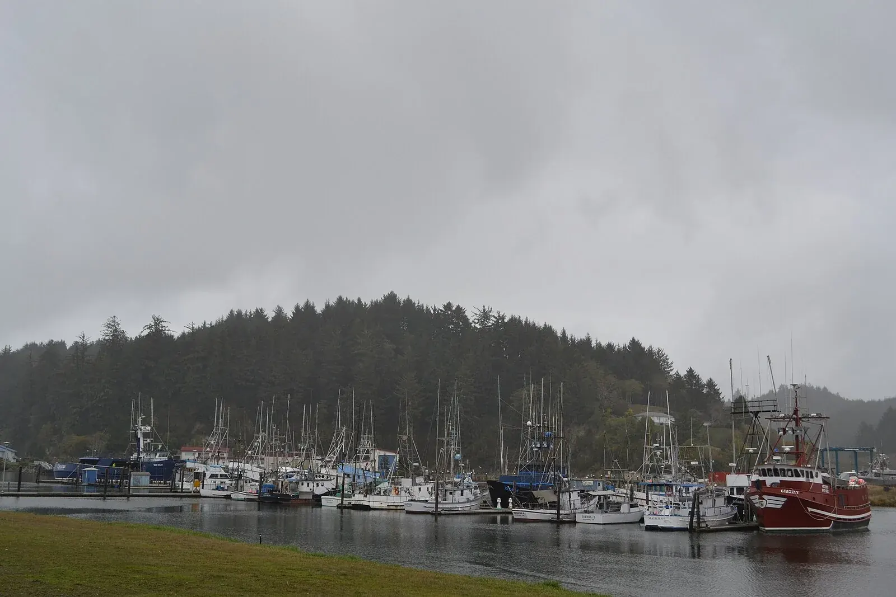
WINCHESTER BAY
Winchester Bay
Visitor7. Source · CC BY-SA 3.0
{kind=link}
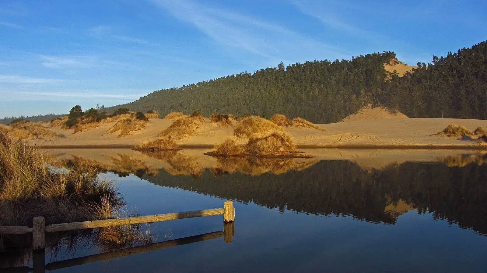
UMPQUA DUNES
Banshee Hill
Themom51. Source · CC BY-SA 3.0
{kind=link}
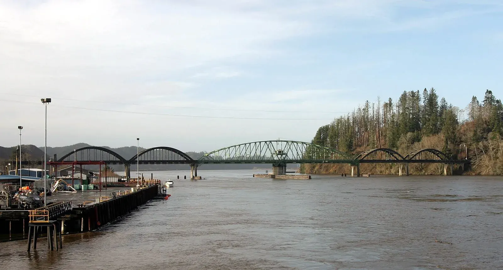
REEDSPORT
Umpqua River Bridge
Cacophony. Source · CC BY-SA 2.5
{kind=link}
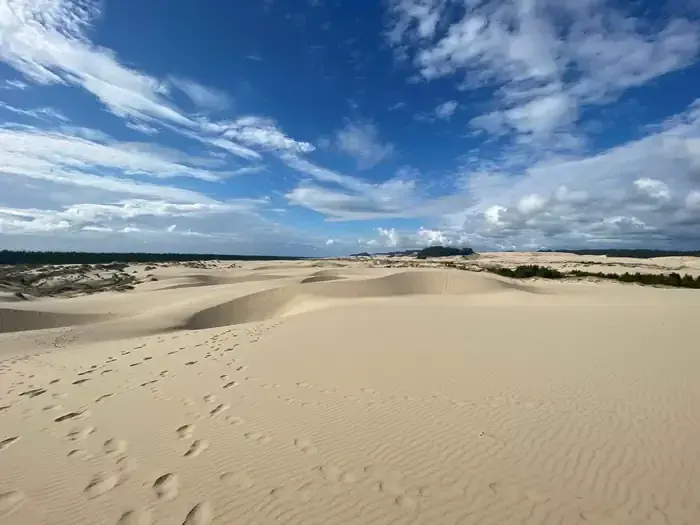
EEL CREEK
Eel Creek Campground
Official USDA Forest Service campground gallery via Recreation.gov. Source page
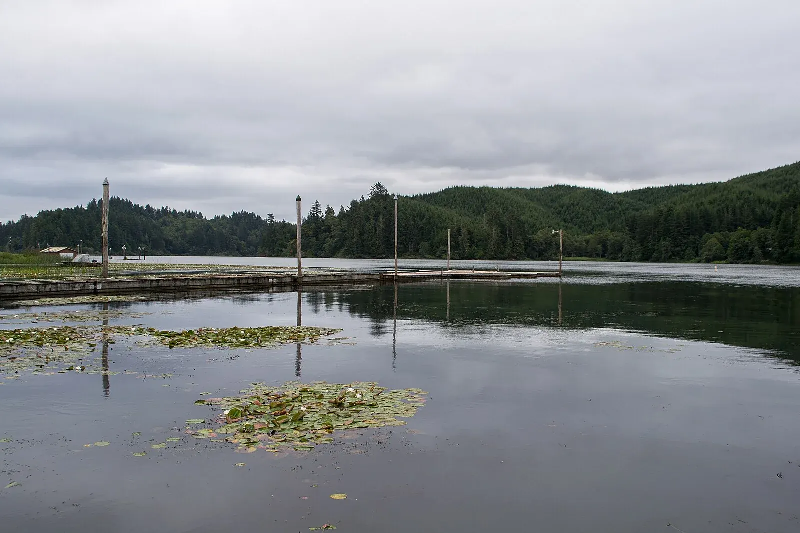
LAKESIDE
Tenmile Lake
Visitor7. Source · CC BY-SA 3.0
{kind=link}
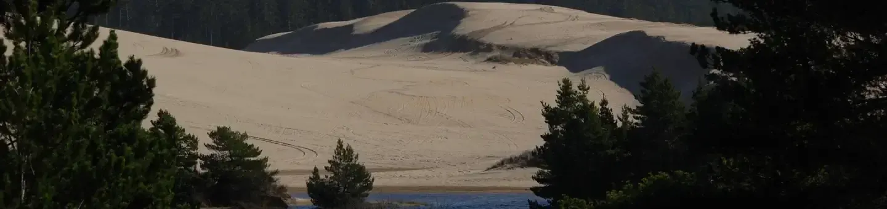
SPINREEL
Spinreel Sand Camping
Official USDA Forest Service campground gallery via Recreation.gov. Source page
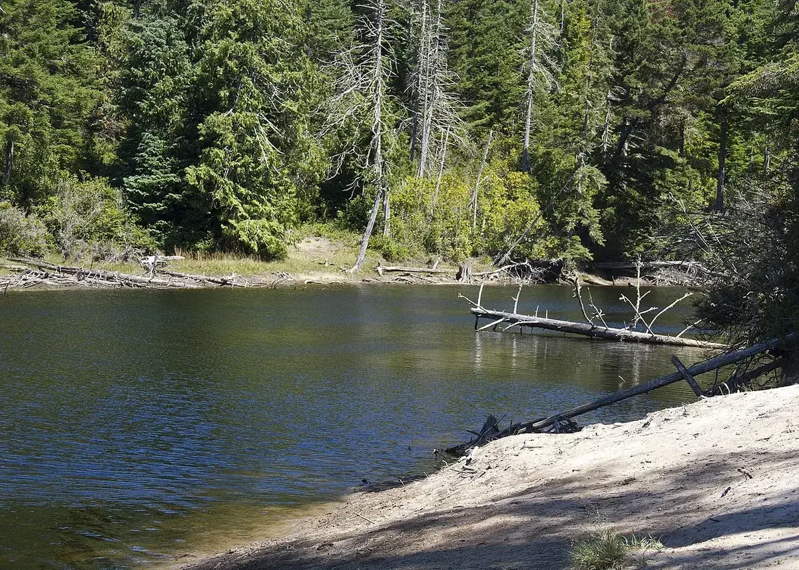
RILEY RANCH
Butterfield Lake
Kathy Munsel, Oregon Department of Fish & Wildlife. The source identifies Riley Ranch as the best access. Source · CC BY-SA 2.0
.jpg){kind=link}
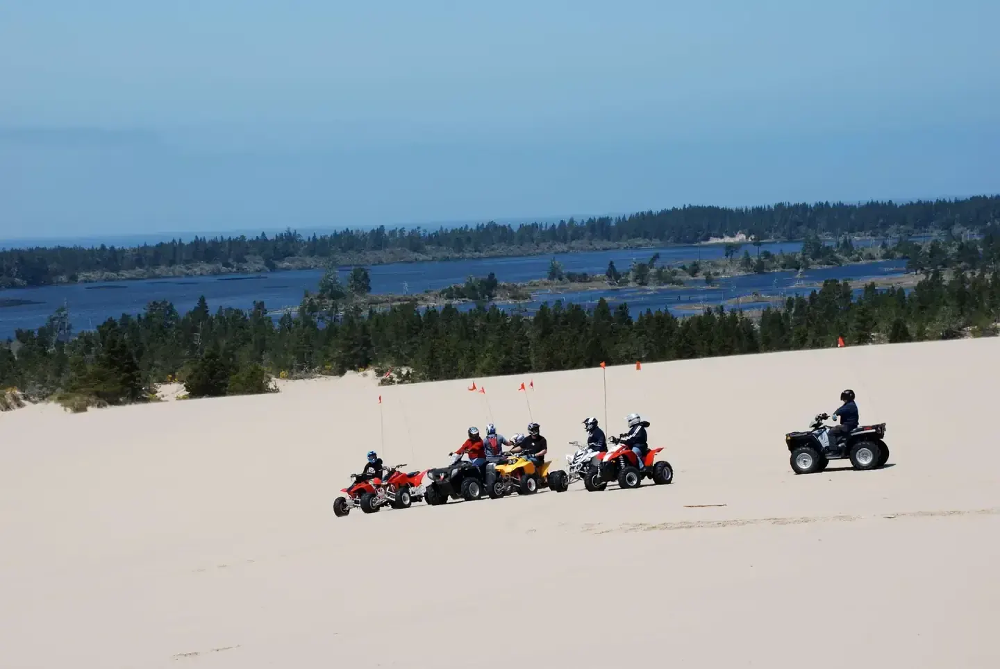
HORSFALL
Horsfall
Official USDA Forest Service campground gallery via Recreation.gov. Source page
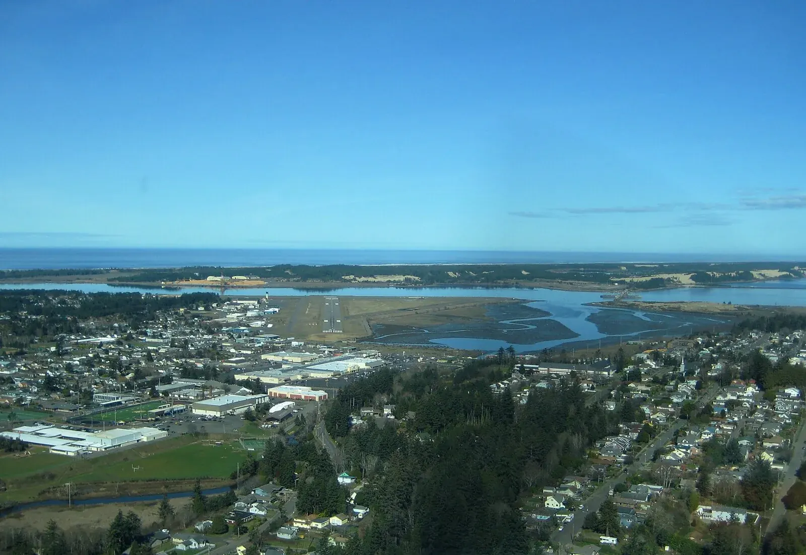
{kind=link}
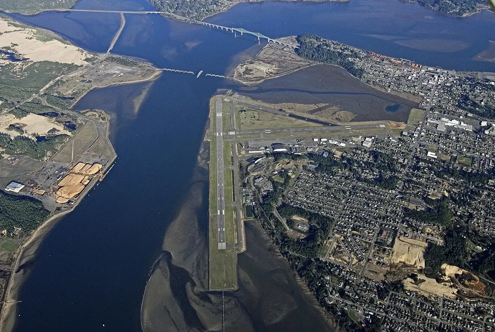
COOS BAY
Coos Bay
RBrittsan. Source · CC BY-SA 3.0
{kind=link}
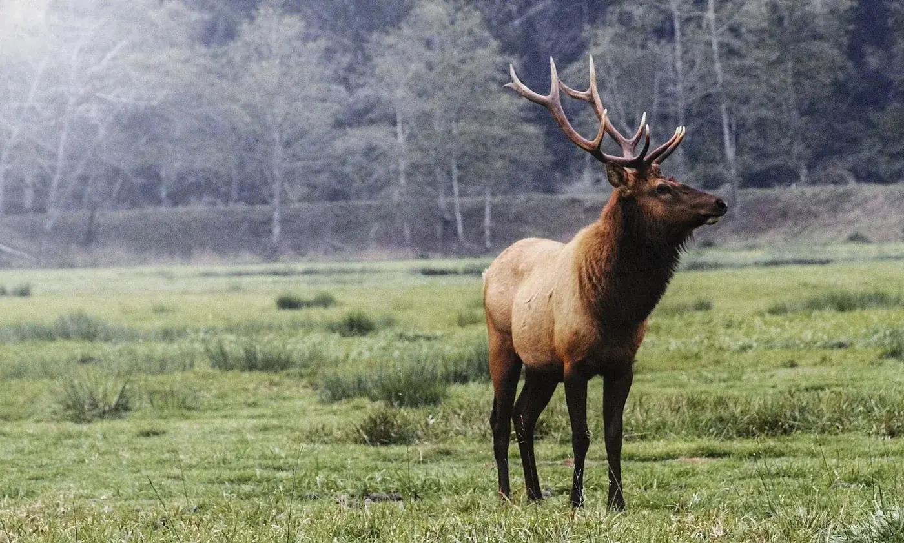
{kind=link}
See something that needs correction? Location accuracy matters to us. Please use the feedback form on the home page and tell us which photograph or caption needs attention.